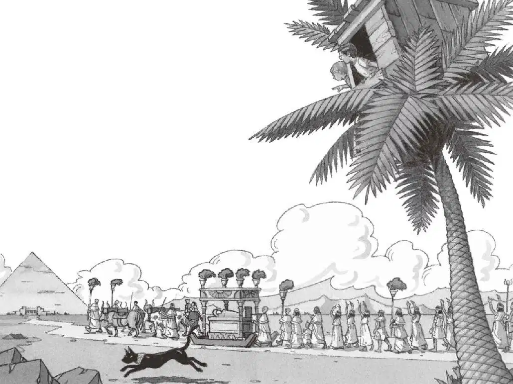
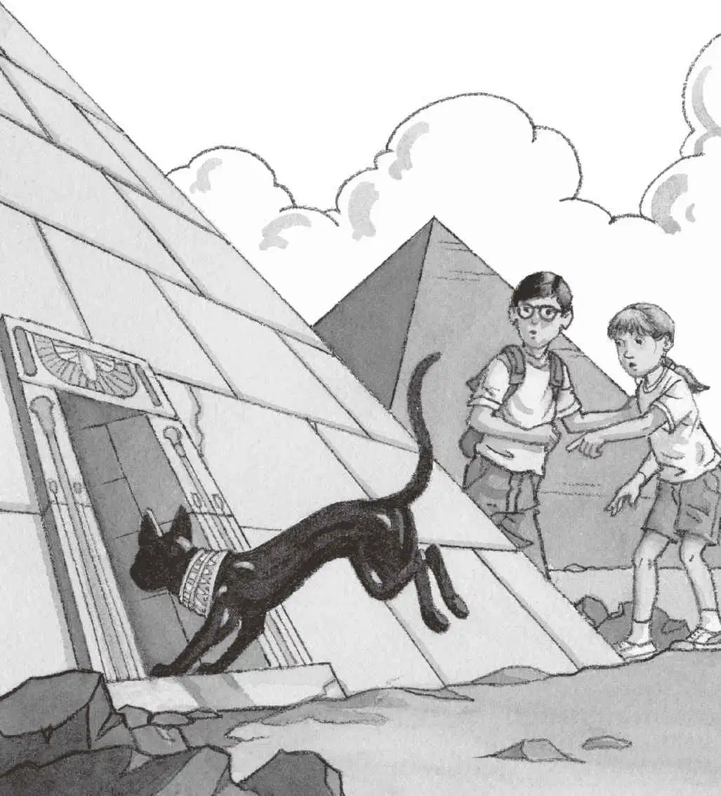

“喵！”
杰克和安妮看看窗外。
树屋落在了一棵棕榈树上。在它周围，还有另外十几棵棕榈树，都矗立在一片被沙漠包围的绿地上。
“喵！”
杰克和安妮低头看去。
刚才那只黑猫正蹲在棕榈树下，用黄澄澄的眼睛盯着杰克和安妮。
“嗨！”安妮大声喊道。
“嘘，”杰克赶紧制止，“会被人听见的。”
“沙漠里哪有人？”安妮说。

黑猫站起身，绕到棕榈树的后面。
“回来！”安妮喊道。她把脑袋探出窗外，想看看黑猫要去哪儿。
突然，她惊奇地叫道：“哇，快看啊，杰克。”
杰克伸出脑袋，往下看去。
黑猫从棕榈树后面蹿了出来，奔向沙漠里那座巨大的金字塔。
一支队伍正朝着金字塔前行，他们看上去跟那本埃及书里画的队伍一模一样。
“这就是书里的那幅图片！”杰克惊喜地说。
“那些人在做什么呢？”安妮问。
杰克赶紧把书翻到那一页，读道：
王室的人死了，要举行盛大的葬礼游行。
亲属、仆人和其他哀悼者跟在棺材后面行走。
棺材被称为石棺，放在由四头牛拉着的橇上。
“这是一场埃及葬礼，”杰克说，“这个匣子叫作石棺。”说完，他又抬头朝窗外看去。
那些牛、橇、埃及人，还有那只黑猫，都以一种梦境般的方式缓慢移动着。
“我得做点儿笔记。”杰克说。
杰克很喜欢做笔记。
他把手伸进背包，掏出笔记本，然后写道：
“如果我们想看到木乃伊，最好抓紧时间行动。”安妮说。
杰克抬起头问：“木乃伊？”
“对呀，那个金色的匣子里，说不定就装着一具木乃伊呢。”安妮大声说道，“我们是在古埃及呀，你忘记了吗？”
杰克特别喜欢木乃伊，他马上放下手中的笔。
“我先下去啦，杰克！”安妮大喊一声。
“等等我！”杰克叫道。
“木乃伊！我来啦！”安妮喊道。
“哦，天哪，木乃伊！”杰克感叹道。
他连忙把笔记本和埃及书胡乱地塞进背包，然后跟着安妮往前跑去。
跑着跑着，一件奇怪的事情发生了！他们离那支队伍越近，就越看不清那些人。
突然，队伍消失了，消失得无影无踪，但那座巨大的金字塔还高高地耸立在他们眼前。
杰克气喘吁吁地环顾了一下四周，说：“怎么回事？那些人上哪儿去了？那些牛、那个金匣子，还有那只黑猫呢？”
“都不见了。”安妮说。
“他们上哪儿去了？”杰克问道。
“也许他们都是幽灵。”安妮回答。
“别说傻话了，世界上根本就没有幽灵，”杰克说，“这肯定是海市蜃楼。”
“什么？”安妮惊讶道。
“海市蜃楼，这在沙漠里是很常见的。”杰克解释道，“看上去好像有东西，其实那只是阳光在热浪里的折射。”
“阳光怎么会看上去像人、像木乃伊棺材和牛呢？”安妮不解地问。

杰克皱起了眉头。
“就是幽灵。”安妮一口咬定。
“不可能。”杰克反驳道。
“快看！”安妮指着金字塔。
在靠近金字塔底部的地方，那只毛质光滑的黑猫正孤零零地站着，一双眼睛盯着杰克和安妮。
“它可不是海市蜃楼。”安妮说。
黑猫动了动，悄悄地沿着金字塔的一侧走了过去，消失在拐角处。
“它要去哪儿？”杰克有点儿纳闷儿。
“我们去看个究竟吧。”安妮说。
他们快步绕过那个拐角，正好看见黑猫从金字塔墙上的一个洞钻了进去。